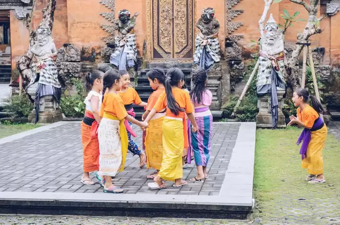

PERMAINAN TRADISIONAL BALI

1. Siap-siapan
Permainan ini dilakukan oleh anak-anak untuk mengisi waktu luang.
Dahulu, permainan ini menjadi sarana penghibur diri seusai
membantu orang tua dalam kesibukan keluarga. Uniknya,
permainan ini biasanya menggunakan anyaman daun kelapa
sebagai tempat bersembunyi.
Permainan ini dilakukan dengan menebak siapa lawan yang ada
di balik anyaman daun kelapa tersebut. Oleh karena itu,
setiap orang harus pandai mengingat lawan mainnya.
Apabila gagal menebak, maka akan kalah. Sebaliknya,
apabila berhasil menebak, maka pemain yang bersembunyi
di balik daun akan gugur dan disingkirkan dari permainan.
2. Magala-galaan
Konsep bermain magala-galaan sama seperti gobak sodor.
Umumnya, permainan ini dilakukan saat bulan purnama
Permainan ini dilakukan oleh dua tim. Satu tim berjaga dan
satunya lagi menjadi penyerang. Anggota tim jaga harus bergerak
dalam arah horizontal dan vertikal untuk menghalangi pemain
penyerang mencapai garis finish dan kemudian kembali ke garis
start tanpa tersentuh oleh penjaga. Jika semua pemain penyerang
berhasil mencapai garis finish dan kembali ke garis start tanpa
tersentuh oleh penjaga, mereka dianggap sebagai pemenang.
3. Ma Geri-Gerian
Permainan ini dilakukan di sungai. Akan lebih menyenangkan
apabila memainkan secara beramai-ramai. Konsep permainan ini
kurang lebih seperti permainan kejar-kejaran, namun lokasi
bermainnya di sungai.
Pertama, akan dipilih seorang "ngalih" yaitu yang bertugas
mencari dan menangkap teman-temannya. Sementara "mengkeh"
yaitu yang bersembunyi di air. Setelah ditunjuknya ngalih,
maka mengkeh harus menyebar dan bersembunyi agar tidak tertangkap
oleh ngalih.
4. Matajog
Apabila Anda tahu permainan egrang, maka pasti Anda akan
familiar dengan permainan Matajog. Pasalnya, kedua permainan
ini memiliki kesamaan. Permainan ini menggunakan dua batang
bambu yang akan digunakan pemain untuk menjadi alas kaki.
Apabila Anda tahu permainan egrang, maka pasti Anda akan familiar
dengan permainan Matajog. Pasalnya, kedua permainan ini
memiliki kesamaan. Permainan ini menggunakan dua batang bambu
yang akan digunakan pemain untuk menjadi alas kaki.
5. Ma Genuk-Genukan
Permainan ini membutuhkan konsentrasi serta ketangkasan tiap
pemainnya. Permainan diawali dengan menentukan siapa yang
akan menjadi "genuk" atau si penerima pesan.
Untuk memulai permainan, salah satu pemain dari setiap pemain
dari tim akan melakukan suit. Bagi tim yang menang, maka akan
memulai permainan terlebih dahulu.
Permainan akan dimulai dengan menyebutkan nama anggota lawan.
Apabila ada yang secara tidak sengaja menyebut nama genuk,
berarti dia gugur dan harus pindah ke dekat genuk.
6. Ma Celeng-Celengan
Mulanya, para pemain (sekitar 8 orang) akan memilih satu orang
untuk menjadi "celeng". Tugas celeng, yakni menendang kaki
lawannya. Apabila terkena tendangannya, maka wajib menjadi
celeng berikutnya.
Pertama, celeng akan mengambil sikap jongkok dengan kedua
tangan menyentuh tanah, sebagaimana seekor babi.
Saat celeng mulai menendangkan kaki ke arah mangsanya,
lawan boleh menghindar dengan cara melompat atau menghindar.
Lawannya biasanya akan mencoba untuk memancing celeng agar
dapat menendang mereka.
7. Meong-Meong
Permainan tradisional meong-meong melibatkan banyak peserta.
Konsepnya mirip dengan bermain kucing-kucingan, di mana
para pemain membentuk lingkaran besar sebagai area permainan.
Dalam permainan ini, dua orang bertindak sebagai bikul dan
meong (atau tikus dan kucing).
Meong berada di luar lingkaran sementara bikul berada di dalamnya.
Tugas meong adalah menangkap bikul yang berada di dalam
lingkaran, sementara tugas pemain yang berada di dalam
lingkaran adalah mencegah meong masuk dan menangkap bikul.
Oleh karena itu, meong harus mencari cara untuk mengelabui
pemain yang berada di dalam lingkaran agar bisa menangkap bikul.
Biasanya, permainan ini dimainkan oleh anak-anak sambil
menyanyikan lagu-lagu.
8. Macurik Manggis
Pertama, pemain akan mengundi siapa yang akan menjadi penebak.
Setelah terpilihnya penebak, maka permainan akan dimulai
dengan iringan lagu yang berjudul Curik Manggis.
Penebak akan ditutup matanya dengan sebuah kain. Kemudian
lawan lainnya membuat bentuk lingkaran dengan cara saling
bergandengan tangan. Saat lagu dinyanyikan, maka semua
lawan akan bergerak melingkar.
Apabila lagu berhenti, lawan harus berhenti bergerak. Kemudian,
si penebak harus bisa menebak siapa lawan yang berada
di belakangnya. Apabila tebakannya benar, maka yang ditunjuk
harus menggantikan sebagai penebak.
9. Masuntik
Masuntik adalah salah satu permainan tradisional yang
populer di Bali. Untuk memainkannya, dua potongan kayu
digunakan, satu panjang dan satu pendek. Pemain membuat
lubang kecil di tanah dan meletakkan tongkat pendek
di atas lubang dengan posisi melintang.
Tongkat panjang digunakan untuk menyuntik atau menendang
tongkat pendek sehingga melambung tinggi. Pemain yang
berhasil menangkap tongkat tersebut menjadi pemenang atau
mendapatkan poin dalam permainan ini.
10. Malayangan
Ada dua cara bermain permainan ini, yakni dengan bertanding
atau hanya melihat keindahan layangan dengan mengikatkan
senarnya ke sebuah pohon. Layangan yang bertanding,
biasanya akan diadu ketajaman senarnya. Ketika layangan
sudah berada di udara dan sudah bersentuhan dengan
senar lawan, pemain harus mencari cara agar senar layangan
lawan bisa terputus.
Sedangkan layangan Patokan yaitu ketika layangan sudah terbang tinggi,
kemudian senarnya diikatkan pada batang pohon atau tempat khusus.
Setelahnya, pemilik dapat melihat keindahan layangan tersebut dari daratan.
|